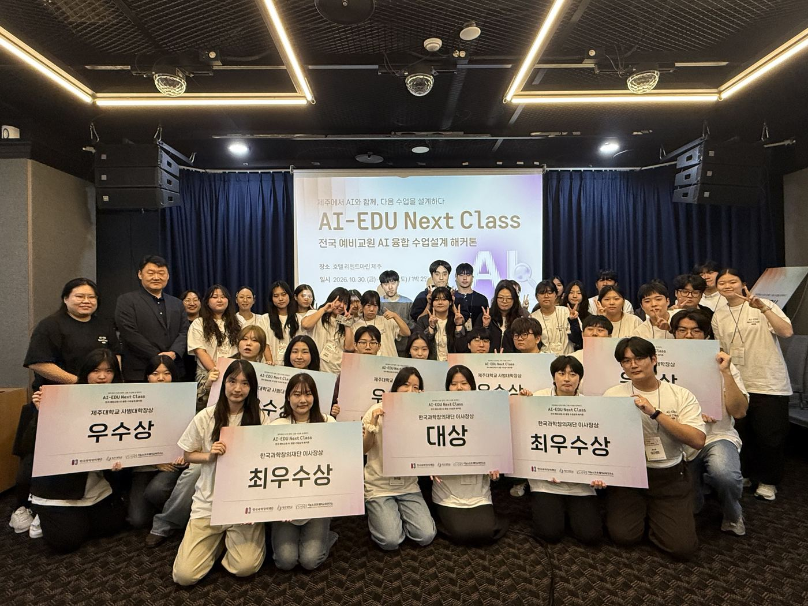
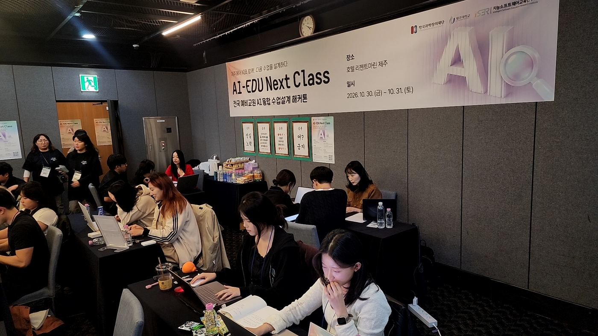
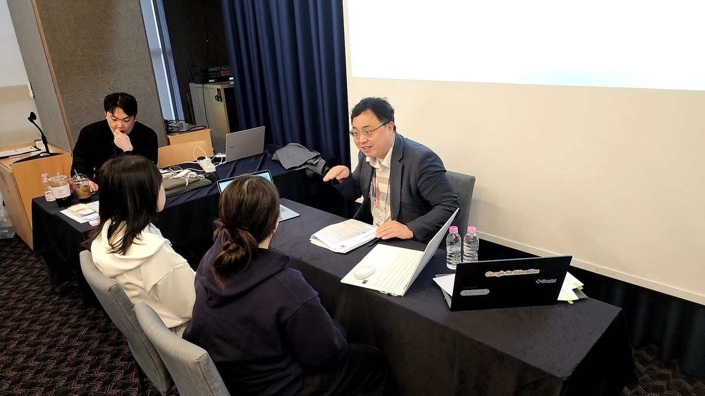
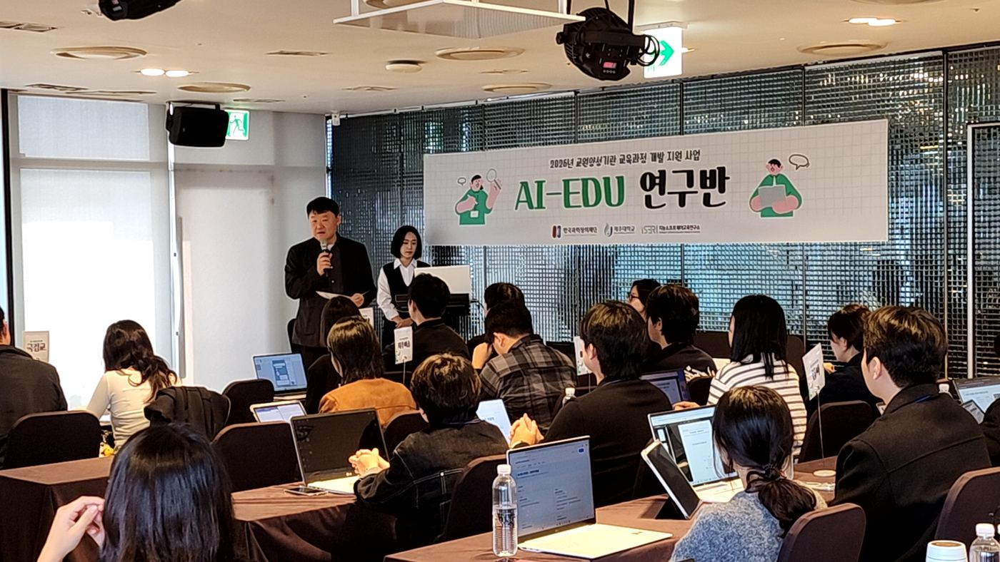
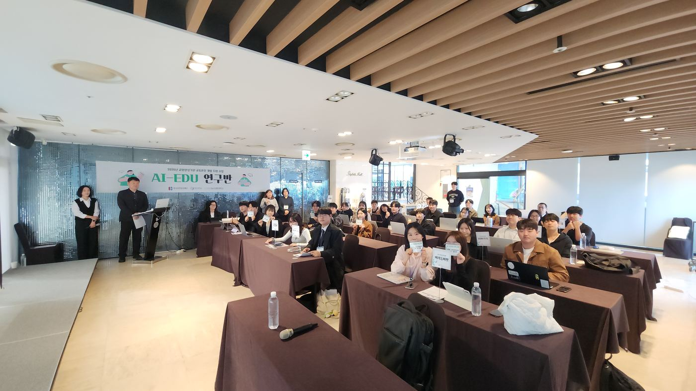
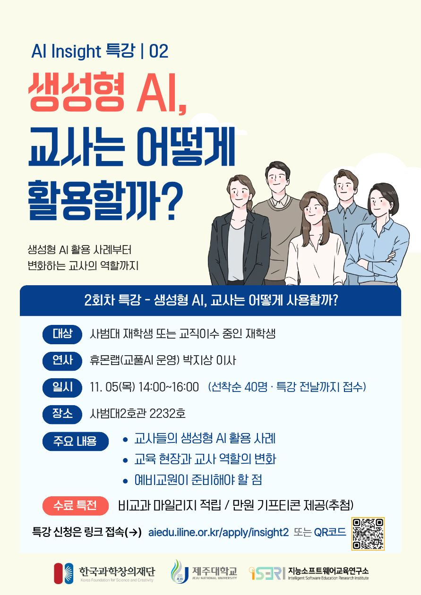
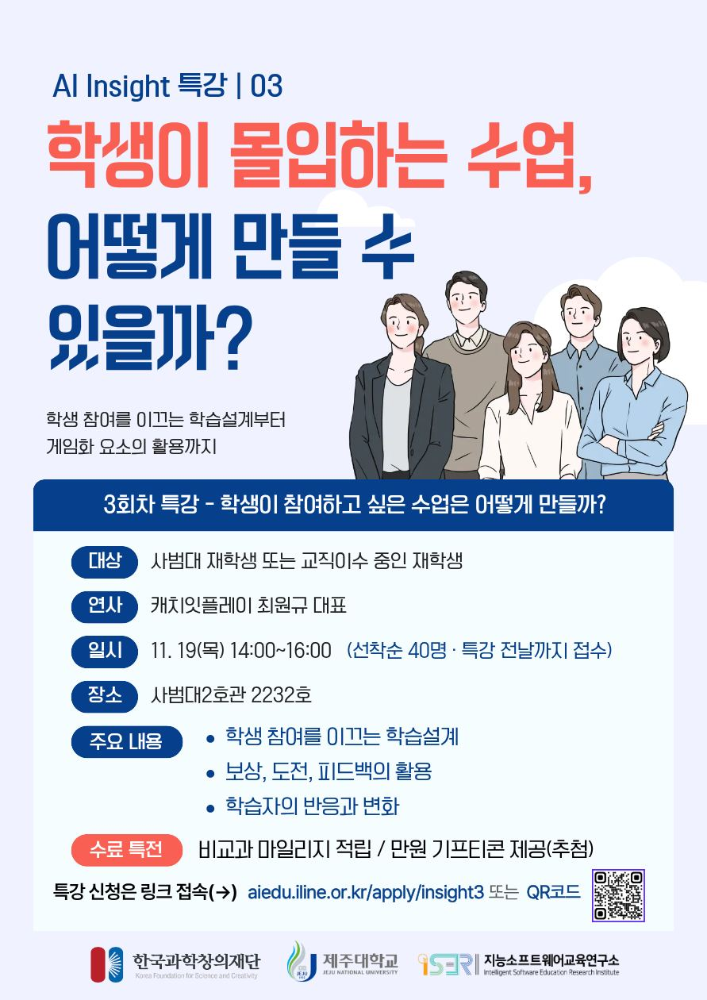
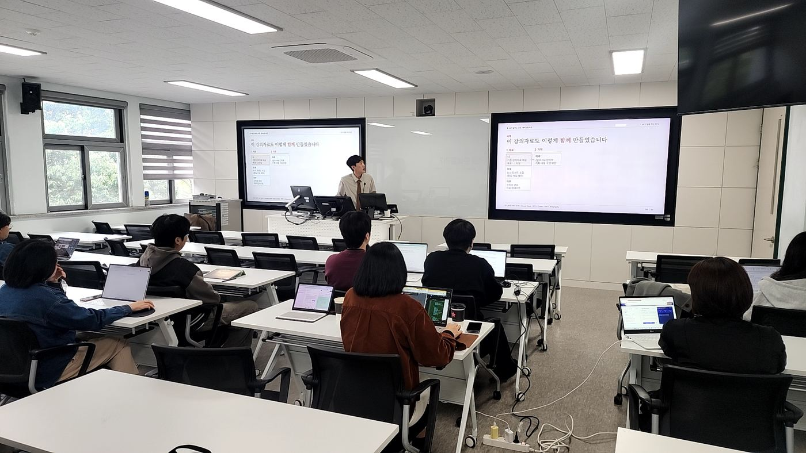

대상한교동T1-1
성균관대 한문교육과 · 고1 통합사회 · 6차시
오디세우스의 항해를 따라 기후변화와 자연관, 환경 문제를 탐구합니다. 학생이 먼저 자료를 찾아 주장을 세우면, 미리 설정한 AI는 답 대신 추가 검색 키워드만 주거나 반론만 제시합니다. 학생은 출처를 직접 확인하고 반론에 재반박하며 최종 입장을 다듬습니다.
예비교원의 AI 융합 수업 역량 강화를 위한 제주대학교 사범대학의 사업 추진 현황을 소개합니다. 주요 프로그램 운영 결과와 참여 안내, 2027년 1월 성과공유회까지의 계획을 전합니다.
현직 교사가 낸 교실의 고민을, 예비교원은 어떤 수업으로 풀었을까?
과제는 현직 교사 200명의 설문 응답에서 뽑았습니다. 전국 34팀이 지원했고, 13개 대학 20팀(40명)이 10월 30~31일 제주에서 1박 2일 동안 4차시 이상 수업지도안을 완성했습니다. 제주대는 최우수상과 우수상을 받았습니다.



학생이 AI의 답을 그대로 받아들이지 않고, 검증·비판해 자기 판단으로 고치도록 만드는 수업
무료 도구만, 학생 2명에 기기 1대, 수업 중 인터넷 없이 학생이 주변 문제를 해결하는 수업
수준이 다른 학생들이 함께 참여하면서 각자 수준에 맞는 피드백을 받는 수업
교과 성취기준과 AI를 연결해 학생이 탐구·문제해결을 하는 수업
오디세우스의 항해를 따라 기후변화와 자연관, 환경 문제를 탐구합니다. 학생이 먼저 자료를 찾아 주장을 세우면, 미리 설정한 AI는 답 대신 추가 검색 키워드만 주거나 반론만 제시합니다. 학생은 출처를 직접 확인하고 반론에 재반박하며 최종 입장을 다듬습니다.
AI 없이 소설의 장면·단어 해석을 먼저 쓰고, AI에게 반박을 받습니다. 그 반박을 ‘사실’과 ‘의견’으로 나눈 뒤 작품 원문을 근거로 검증표를 작성하고, 마지막 차시에 자기 해석을 고치거나 유지해 최종 해석을 완성합니다.
손의 위치를 카메라 인식으로 좌표평면에 띄우고, 초음파 센서로 움직임을 시간-거리 그래프로 만들어 예상 그래프와 비교합니다. 이어 공공데이터를 학생이 먼저 해석한 뒤 AI의 해석과 비교하고, 실제 데이터를 근거로 검증합니다.
뉴스 기사를 다문화 가정 학생이나 초등학생 같은 독자에게 맞게 쉽게 바꾸는 수업입니다. AI를 쓰기 전에 지켜야 할 정보의 체크리스트를 만들고, AI 변환문에서 빠지거나 뜻이 바뀐 부분을 국어사전으로 찾아 고칩니다. 실제 독자에게 읽힌 뒤 받은 피드백으로 글을 완성합니다.
AI를 ‘배우는 학생’으로 설정해 학생이 어간·어미, 어근·접사를 AI에게 가르칩니다. 2차시에는 AI가 보이는 문법 오개념을 진단하고 바로잡으며, 마지막 차시에는 AI 없이 새 단어를 분석한 뒤 AI의 분석과 비교합니다.
AI에 판단을 맡긴 친구의 실험보고서를 분석하며 시작합니다. 이어 ‘땅은 물을 어떻게 걸러 줄까?’를 주제로 가설·설계·해석 단계마다 자기 생각을 먼저 쓰고, AI의 제안은 좋은 탐구의 기준에 비춰 수용·수정·기각합니다. 평가에서는 AI 대화 기록을 그대로 내고 ‘누가 판단했는지’를 봅니다.
‘작다·빼다·마이너스’처럼 일상어와 수학 용어의 뜻이 달라 생기는 음수 개념 이해의 격차에 주목했습니다. 그래픽조직자로 어휘와 개념의 관계를 정리하고, 팀이 만든 AI 학습 프로그램 ‘징검다리’로 어휘를 확인하며 학생별 보충 학습을 합니다.
축제 부스 신청 프로그램을 파이썬으로 만듭니다. 1차시에 도움 없이 진단을 받고, 결과에 따라 기초 지원·자율 검증 두 경로로 AI 도움을 다르게 받습니다. 도움은 차시마다 줄어들고, 마지막에는 다시 혼자 풀어 1차시와 비교합니다.
수상작 소개는 본선 최종 제출 수업지도안을 바탕으로 요약했습니다. 우수 수업지도안은 정리를 마치는 대로 오픈라이브러리에서 공유할 예정입니다.
서로 다른 전공이 한 팀이 되면 어떤 수업이 나올까?
사범대학 학생 10팀이 약 6주 동안 두 개 이상 전공이 한 팀을 이뤄 중·고등학생용 AI 융합 수업을 설계했습니다. 10월 30일 최종 발표회에서 외부 심사위원 4명의 평가로 우수팀 6팀을 선정했습니다.


학생이 자율주행차 개발팀이 되어 운전 원칙을 정하고, 팀이 만든 웹 시뮬레이터로 데이터를 모아 AI 모델을 학습시킵니다. 이어 ‘학생 AI 윤리위원회’에서 모델의 판단을 검증하고, 사고의 책임을 공리주의와 의무론으로 따져 봅니다.
두 요금제를 비교하며 일차함수를 식·표·그래프로 나타냅니다. 학생이 먼저 풀어 본 뒤 정답 대신 질문과 한 단계 힌트만 주는 AI의 도움을 받고, 마지막에는 AI 없이 새 문제를 해결합니다.
AI가 설명한 제주어를 사전과 어르신 인터뷰 자료로 ‘맞음·틀림·애매함’으로 판정합니다. 이어 학생들이 직접 만든 제주어 용례 데이터를 AI에 주고, 답변이 어떻게 달라지는지 확인합니다.
생성형 AI로 만든 시뮬레이션에서 자기장의 방향과 세기를 바꿔 가며 자성체와 자기주성세균의 움직임을 관찰합니다. 탐구 결과로 AI의 예측을 검증하고, 기본·심화 수준별 활동으로 학습 격차를 줄입니다.
카메라가 인식한 손의 위치를 좌표평면에 띄우고, 마이크로비트 초음파센서로 거리 변화를 그래프로 그립니다. 실생활 데이터를 AI와 함께 분석하되, AI의 해석은 실제 자료로 다시 확인합니다.
팀이 만든 AI 탐구 사이트 GeoQuest로 네팔·우간다·방글라데시·라오스를 비교해 원조 대상국을 고릅니다. 국제 원조의 윤리 원칙을 고려해 계획서를 쓰고, AI의 피드백을 따져 보며 고쳐 나갑니다.
연구반 팀들은 11월에 마이크로티칭 영상을 찍어 오픈라이브러리에 올리고, 겨울 교육봉사에서 이 수업으로 도내 중·고등학생을 만납니다.
대학 전공 수업에 생성형 AI를 들여오려면 무엇부터 해야 할까?
AI-CoP는 사범대학 교원이 담당 교과목에 생성형 AI를 적용해 보고 사례를 나누는 교수연구회입니다. 전임 교원은 물론 강사·겸임·초빙 등 비전임 교원도 함께하실 수 있습니다(컴퓨터교육과 제외).
지난 교원 수요조사에서 90.0%가 수업의 AI 활용에 긍정적으로 답했고, 가장 많이 요청한 것이 생성형 AI 구독료 지원과 수업 사례 공유였습니다. AI-CoP는 이 두 가지에 맞춰 만들었습니다.
세 가지 유형 중 하나를 골라 실천합니다지원 내용 생성형 AI 구독료(서비스 종류 제한 없이 사업단이 직접 결제), 현장 교사·산업체 전문가 자문비, 자문 회의비
결과물 2027. 1. 22.까지 결과보고서, AI를 반영한 2027학년도 강의계획서, 수업 활용 결과물 1종
AI·에듀테크 현장의 전문가를 모시고 교원을 위한 특강을 엽니다. 일정과 연사는 확정되는 대로 안내드리겠습니다.
듣고 싶은 주제가 있으면 ai_edu@jejunu.ac.kr로 보내 주세요. “수업에서 챗봇을 어떻게 쓰나”, “AI로 쓴 과제를 어떻게 평가하나” 같은 한 줄이면 충분합니다.
신청과 자료는 어디서 보고, 팀 작업은 어디서 할까?
aiedu.iline.or.kr에서 프로그램 신청과 시설 예약을 합니다. 곧 마이크로티칭 영상과 우수 수업지도안 등 자료도 이곳에서 볼 수 있습니다.
예비교원의 팀 프로젝트와 수업 실습을 위한 공간을 준비하고 있습니다. 가구와 기자재 설치를 마치는 대로 문을 엽니다.
10월 말부터 1월까지, 날짜 순으로 정리했습니다
AI Insight 특강은 사범대학 2호관 2232호, 14:00~16:00, 회차별 선착순 40명이며 오픈라이브러리에서 특강 전날까지 신청합니다.


「산업 및 에듀테크 발전에 따른 학교 현장 변화」 네패스 임재승 선임연구원. Agentic AI의 개념과 학교 적용, AI에 작업을 맡길 때의 효율과 위험을 다뤘습니다.

연구반 우수팀 6팀 선정, 해커톤 본선 20팀 발표와 시상
「생성형 AI, 교사는 어떻게 사용할까?」 휴몬랩 박지상 이사
휴몬랩은 교사용 AI 서비스 ‘교풀AI’를 운영합니다. 교풀AI는 수업지도안 작성, 학교생활기록부 작성처럼 교사의 실제 업무에 맞춘 기능을 제공합니다. 교사가 학교에서 AI를 어떤 일에, 어떻게 쓰는지 구체적인 업무 사례로 들을 수 있어 교사가 될 예비교원에게 특히 도움이 될 것입니다.
전임·비전임 교원 10명 내외, 선착순. 신청 페이지 바로가기
연구반 팀들이 발표회 피드백을 반영해 20~30분 수업 영상을 찍습니다.
「학생이 참여하고 싶은 수업은 어떻게 만들까?」 캐치잇플레이 최원규 대표
캐치잇플레이는 영어 학습 게임 ‘캐치잇잉글리시’로 게임화를 실제 학습 서비스에 녹여 낸 기업입니다. 서비스를 만들고 운영하며 겪은 시행착오와, 보상·도전·피드백에 따라 학습자의 반응이 어떻게 달라졌는지를 직접 들을 수 있습니다. 학생 참여를 이끄는 수업을 고민하는 예비교원이라면 배울 점이 많을 것입니다.
오픈라이브러리 회원이면 누구나 마이크로티칭 영상을 보고 1인 3표까지 투표할 수 있습니다. 상위 6팀에 팀당 50만 원 장학금, 결과는 12. 1.(화)에 발표합니다.
연구반·해커톤 수업지도안으로 예비교원이 도내 중·고등학교와 청소년기관을 찾아갑니다. 회당 2~3차시, 학생 5~10명. 협력할 학교나 기관이 있으면 사업단 메일로 알려 주세요.
듣고 싶은 주제를 ai_edu@jejunu.ac.kr로 받고 있습니다.
AI-CoP 교원의 수업 사례와 연구반·해커톤 우수 수업을 함께 나눕니다.
모든 프로그램 공지와 신청은 오픈라이브러리에서 합니다. 특강 주제 제안, 교육봉사 협력, 사업단에 바라는 점은 메일로 보내 주세요.
AI-CoP 신청, 특강 신청, 크리에이터 장학생 투표를 모두 이곳에서 합니다. 회원가입 후 이용할 수 있습니다.
aiedu.iline.or.kr 바로가기 →